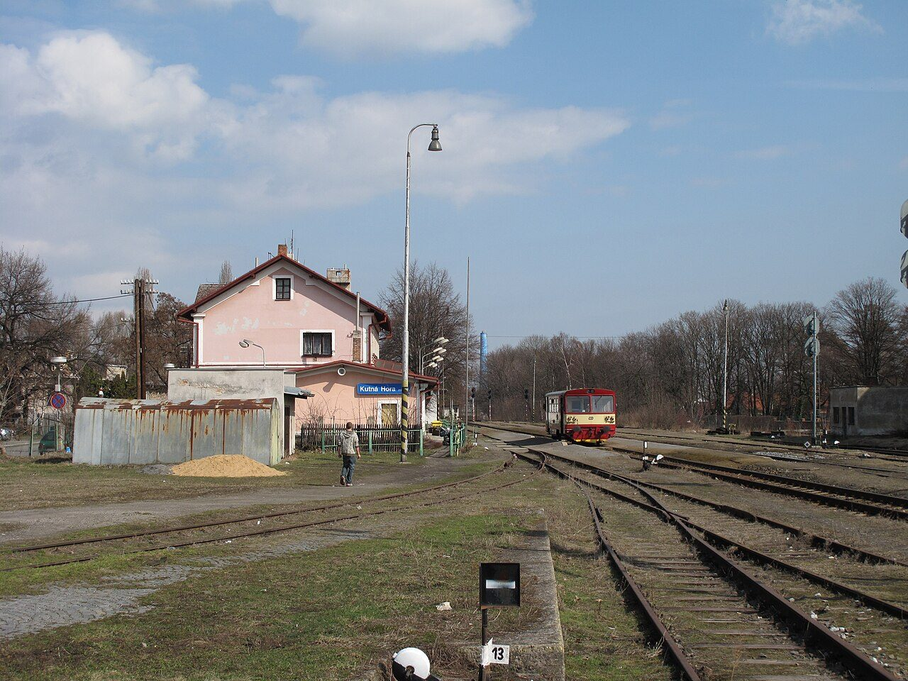

Při hledání spojení rozlišuj hlavní nádraží a stanici Kutná Hora město. Hlavní nádraží leží mimo historické centrum. Místním vlakem se dostaneš blíž k místům, kam pak dojdeš pěšky.
Jak si výlet poskládat
-
Dojeď na hlavní nádraží
Vyhledej spojení z Prahy až do stanice Kutná Hora město. Vyhledávač ti nabídne také potřebný přestup na hlavním nádraží.
-
Pokračuj místním vlakem
Pro historické centrum zvol stanici Kutná Hora město. Pokud chceš navštívit Sedlec, prohlédni si předem polohu zastávky Kutná Hora-Sedlec.
-
Vyber si pěší trasu
Z městského nádraží pokračuj podle mapy do centra. Nech si čas na procházku i návrat k vlaku; návštěvy památek plánuj podle jejich otevírací doby.
Proč právě sem
Hodí se na den, kdy chceš kromě jízdy vlakem projít město. Krátký místní vlak navíc ukáže, proč je dobré při plánování rozlišovat názvy nádraží.
Co ověřit před odjezdem
Před cestou ověř návaznost obou vlaků a zpáteční spojení. Vstupné a otevírací dobu památek si zjisti podle toho, které chceš skutečně navštívit.
Čas 6–8 hodin je návrh na celý výlet včetně procházky, ne jízdní doba vlaku.
Podklady k trase ověřeny . Konkrétní spoje vyhledej pro den své cesty.